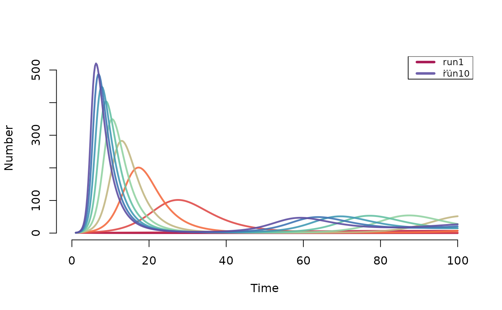
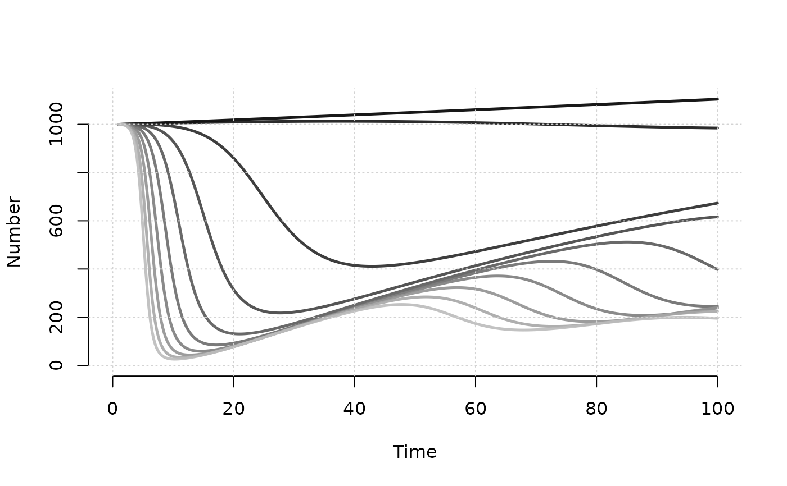

Plots epidemiological data from a deterministic compartment
epidemic model solved with dcm.
Usage
# S3 method for dcm
plot(
x,
y,
popfrac = FALSE,
run,
col,
lwd,
lty,
alpha = 0.9,
legend,
leg.name,
leg.cex = 0.8,
axs = "r",
grid = FALSE,
add = FALSE,
...
)Arguments
- x
An
EpiModelobject of classdcm.- y
Output compartments or flows from
dcmobject to plot.- popfrac
If
TRUE, plot prevalence of values rather than numbers (see details).- run
Run number to plot, for models with multiple runs (default is run 1).
- col
Color for lines, either specified as a single color in a standard R color format, or alternatively as a color palette from
RColorBrewer(see details).- lwd
Line width for output lines.
- lty
Line type for output lines.
- alpha
Transparency level for lines, where 0 = transparent and 1 = opaque (see
adjustcolorfunction).- legend
Type of legend to plot. Values are
"n"for no legend,"full"for full legend, and"lim"for limited legend (see details).- leg.name
Character string to use for legend, with the default determined automatically based on the
yinput.- leg.cex
Legend scale size.
- axs
Plot axis type (see
parfor details), with default of "r".- grid
If
TRUE, a grid is added to the background of plot (seegridfor details), with default of nx by ny.- add
If
TRUE, new plot window is not called and lines are added to existing plot window.- ...
Additional arguments to pass to main plot window (see
plot.default).
Details
This function plots epidemiological outcomes from a deterministic
compartmental model solved with dcm. Depending on the number of
model runs (sensitivity analyses) and number of groups, the default plot is
the fractional proportion of each compartment in the model over time. The
specific compartments or flows to plot may be set using the y
parameter, and in multiple run models the specific run may also be specified.
The popfrac Argument
Compartment prevalence is the size of a compartment over some denominator.
To plot the raw numbers from any compartment, use popfrac=FALSE; this
is the default. The popfrac parameter calculates
and plots the denominators of all specified compartments using these rules:
for one-group models, the prevalence of any compartment is the compartment size divided by the total population size; 2) for two-group models, the prevalence of any compartment is the compartment size divided by the group size.
Color Palettes
Since dcm supports multiple run sensitivity models, plotting
the results of such models uses a complex color scheme for distinguishing
runs. This is accomplished using the RColorBrewer color
palettes, which include a range of linked colors using named palettes. For
plot.dcm, one may either specify a brewer color palette listed in
brewer.pal.info, or, alternatively, a vector of standard R
colors (named, hexidecimal, or positive integers; see col2rgb).
Plot Legends
There are three automatic legend types available, and the legend is
added by default for plots. To turn off the legend, use legend="n". To
plot a legend with values for every line in a sensitivity analysis, use
legend="full". With models with many runs, this may be visually
overwhelming. In those cases, use legend="lim" to plot a legend
limited to the highest and lowest values of the varying parameter in the
model. In cases where the default legend names are not helpful, one may
override those names with the leg.name argument.
See also
dcm, brewer.pal.info
Examples
# Deterministic SIR model with varying act rate
param <- param.dcm(inf.prob = 0.2, act.rate = 1:10,
rec.rate = 1/3, a.rate = 0.011, ds.rate = 0.01,
di.rate = 0.03, dr.rate = 0.01)
init <- init.dcm(s.num = 1000, i.num = 1, r.num = 0)
control <- control.dcm(type = "SIR", nsteps = 100, dt = 0.25)
mod <- dcm(param, init, control)
# Plot disease prevalence by default
plot(mod)

# Plot prevalence of susceptibles
plot(mod, y = "s.num", popfrac = TRUE, col = "Greys")
# Plot number of susceptibles
plot(mod, y = "s.num", popfrac = FALSE, col = "Greys", grid = TRUE)

# Plot multiple runs of multiple compartments together
plot(mod, y = c("s.num", "i.num"),
run = 5, xlim = c(0, 50), grid = TRUE)
plot(mod, y = c("s.num", "i.num"),
run = 10, lty = 2, legend = "n", add = TRUE)